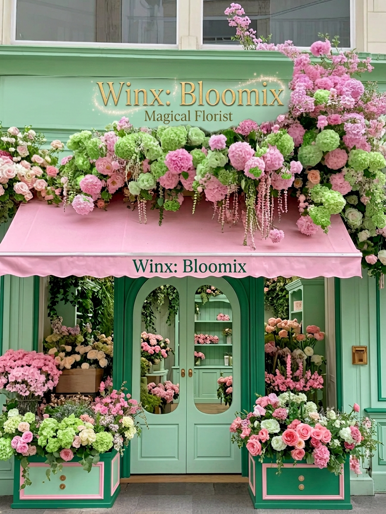

Ми пропонуємо створення авторських букетів зі свіжозрізаних квітів, стильних квіткових боксів, кошиків та монобукетів з індивідуальним підбором палітри і швидкою адресною доставкою.
Наша команда здійснює комплексне флористичне оформлення свят і весіль, фітодизайн та озеленення інтер'єрів офісів і ресторанів, а також оформлення регулярної щотижневої квіткової підписки для бізнесу.
Історія квіткового простору Winx: Bloomix розпочалася у затишному куточку Подолу з великої пристрасті до живої природи та естетики. Спочатку це була невелика експериментальна студія, де ми створювали камерні композиції для друзів, підбираючи кожну стеблину вручну на світанку. Згодом щира увага до деталей, збереження природної свіжості квітів без зайвого пластикового пакування та прагнення дарувати не просто букети, а теплі емоції перетворили нашу майстерню на улюблене місце поціновувачів гармонійної, витонченої флористики.

| Експрес-доставка (Київ) | Правий берег | Нічна доставка (22:00 - 08:00) | Печерський р-н |
| Лівий берег | Подільський р-н | ||
| Передмістя (до 20 км) | Оболонський р-н | ||
| Самовивіз зі студії | Безкоштовна доставка для замовлень від 2500 грн | Кур'єр на авто | |